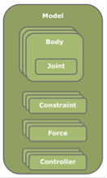
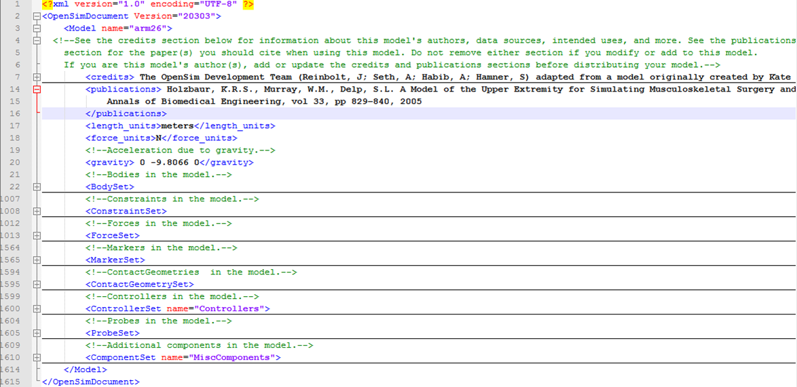
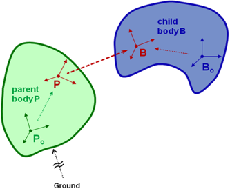
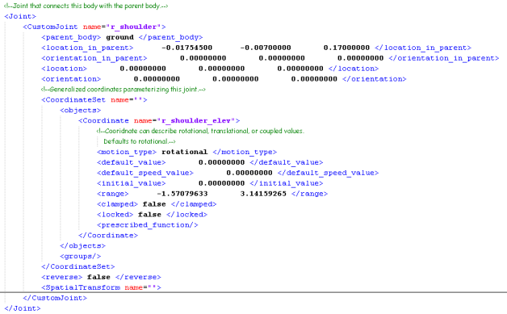
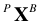
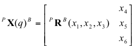
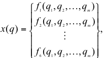
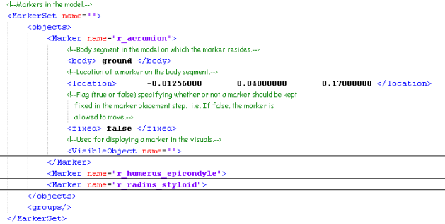
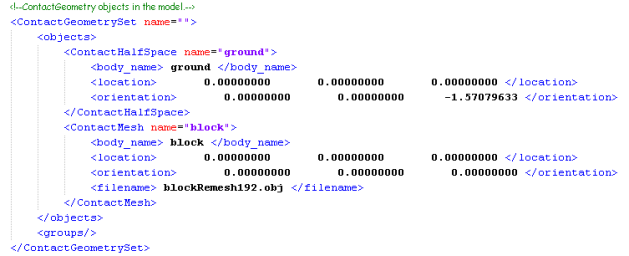

The topics covered in this section include:
You can also find more information in the Example - Model Editing.
Use the OpenSim GUI's XML Browser, under Help to find the XML mark-up for any OpenSim model component described below. |
Overview
An OpenSim model represents the dynamics of a system of rigid bodies and joints that are acted upon by forces to produce motion. The OpenSim model file is made up of components corresponding to parts of the physical system. These parts are: bodies, joints, forces, markers, constraints, contact geometry, and controllers.
In OpenSim, the skeletal part of a model is represented by rigid bodies interconnected by joints. Joints define how a body (e.g., bone segment) can move with respect to its parent body. In OpenSim, all bodies have a parent and are connected to its parent via a joint, except for ground. Constraints can also be applied to limit the motion of bodies.
Muscles are modeled as specialized force elements that act at muscle points (e.g., insertion and origin points) connected to rigid bodies. The force of a muscle is typically dependent on the path through muscle points comprised of muscle fiber and tendon lengths, the rate of change of the fiber lengths, and the level of muscle activation. OpenSim also has a variety of other forces, which represent externally applied forces (e.g. ground reaction forces), passive spring-dampers (e.g., ligaments), and controlled linear and torsional actuators.
The figure below shows a conceptual schematic of an OpenSim model. In the remainder of the chapter, we will discuss the OpenSim model file format used to describe these models.You can edit these properties using an XML editor, or you can view and edit the properties using the GUI Property Editor.

OpenSim Model File Format
An OpenSim model is described by a file that utilizes the XML code structure to organize its contents. XML uses tags to identify and manage information, such as:
<body> r_humerus </body>
where <body> signifies the opening of the tag, r_humerus is the name of a body in the model, and </body> signifies the end of the tag. The name of the tag identifies the type of information between described. When you edit an OpenSim model file, there are tags representing each part of the model, as shown in the figure below.
| To view and edit XML files with colored tags, you can use Notepad++ on PC or EditiX on Mac, both of which are freely available. |
An OpenSim Model File (arm26.osim). The file below was opened in the XML editor Notepad++, which provides the color coding. The sections have been collapsed to highlight the model components. Clicking on the + icon to the left of a section would expand it, displaying the relevant tags for that section.

Bodies
In formulating the equations-of-motion (i.e., the system dynamics), OpenSim employs Simbody which is an open-source multibody dynamics solver. In Simbody and OpenSim, the body is the primary building block of the model. Each body in turn owns a joint that connects it to an existing parent body. The joint defines the coordinates and kinematic transforms that govern the motion of that body with respect to its parent body. Within the model all bodies are contained in a BodySet.
Thus, to start our model, we need to define a set of rigid bodies that represent our system. In the <BodySet> section, we define this group of bodies, with the name, mass properties, and visible objects associated with each body. The figure below shows an example of the r_humerus body in the Arm26 model. Note the key tags, such as <mass>, <mass_center>, and <inertia_xx> (and similarly named tags for inertia in other directions).
Example XML Code from Model Arm26 to Represent a Body
<Body name="r_humerus"> <mass>1.864572</mass> <mass_center> 0 -0.180496 0</mass_center> <inertia_xx>0.01481</inertia_xx> <inertia_yy>0.004551</inertia_yy> <inertia_zz>0.013193</inertia_zz> <inertia_xy>0</inertia_xy> <inertia_xz>0</inertia_xz> <inertia_yz>0</inertia_yz> <Joint> ...
Body Geometry
VisibleObject
GeometrySet and DisplayGeometry
- Same directory as the model
- "Geometry" directory underneath it.
- In a directory included in the "Geometry Path" available using Edit->Preferences->Geometry Path.
<VisibleObject>
<!--Set of geometry files and associated attributes, allow .vtp, .stl, .obj-->
<GeometrySet>
<objects>
<DisplayGeometry>
<!--Name of geometry file .vtp, .stl, .obj-->
<geometry_file>arm_r_humerus.vtp</geometry_file>
<!--Color used to display the geometry when visible-->
<color> 1 1 1</color>
<!--Name of texture file .jpg, .bmp-->
<texture_file />
<!--in body transform specified as 3 rotations (rad) followed by 3 translations rX rY rZ tx ty tz-->
<transform> -0 0 -0 0 0 0</transform>
<!--Three scale factors for display purposes: scaleX scaleY scaleZ-->
<scale_factors> 1 1 1</scale_factors>
<!--Display Pref. 0:Hide 1:Wire 3:Flat 4:Shaded-->
<display_preference>4</display_preference>
<!--Display opacity between 0.0 and 1.0-->
<opacity>1</opacity>
</DisplayGeometry>
</objects>
<groups />
</GeometrySet>
<!--Three scale factors for display purposes: scaleX scaleY scaleZ-->
<scale_factors> 1 1 1</scale_factors>
<!--transform relative to owner specified as 3 rotations (rad) followed by 3 translations rX rY rZ tx ty tz-->
<transform> -0 0 -0 0 0 0</transform>
<!--Whether to show a coordinate frame-->
<show_axes>false</show_axes>
<!--Display Pref. 0:Hide 1:Wire 3:Flat 4:Shaded Can be overriden for individual geometries-->
<display_preference>4</display_preference>
</VisibleObject>
Joints
In addition to the set of rigid bodies, we also need to define the relationship between those bodies (i.e., joint definitions). In the figure below, a joint (in red) defines the kinematic relationship between two frames (B and P) each affixed to a rigid-body (the parent, Po, and the body being added, Bo) parameterized by joint coordinates

A body is a moving reference frame (Bo) in which its center-of-mass and inertia are defined, and the location of a joint frame (B) fixed to the body can be specified. Similarly, the joint frame (P) in the parent body frame (Po) can also be specified. Flexibility in specifying the joint is achieved by permitting joint frames that are not coincident with the body frame.
As an example, the body r_humerus contains the joint r_shoulder. The figure below shows an example from Arm26 defining the r_shoulder joint. Note the key tags, such as <parent_body>, <location_in_parent>, <orientation_in_parent>, <location>, <orientation>, and <Coordinate>.
Example XML Code from Model Arm26 to Represent a Joint:

Available Joint Types
- WeldJoint: introduces no coordinates (degrees of freedom) and fuses bodies together
- PinJoint: one coordinate about the common Z-axis of parent and child joint frames
- SliderJoint: one coordinate along common X-axis of parent and child joint frames
- BallJoint: three rotational coordinates that are about X, Y, Z of B in P
- EllipsoidJoint: three rotational coordinates that are about X, Y, Z of B in P with coupled translations such that B traces and ellipsoid centered at P
- FreeJoint: six coordinates with 3 rotational (like the ball) and 3 translations of B in P
- CustomJoint: user specified 1-6 coordinates and user defined spatial transform to locate B with respect to P
The CustomJoint Transform
Most joints in an OpenSim model are custom joints since this is the most generic joint representation, which can be used to model both conventional (pins, slider, universal, etc…) as well as more complex biomechanical joints. The user must define the transform (rotation and translation) of the child in the parent (B and P, in the joint definition figure above) as a function of the generalized coordinates listed in the Joint’s CoordinateSet. Consider the spatial transform  :

where

q are the joint coordinates, and x are the spatial coordinates for the rotations (x1, x2, x3) and translations (x4, x5, x6) along user-defined axes that specify a spatial transform (X) according to functions fi. The behavior of a CustomJoint is specified by its SpatialTransform. A SpatialTransform is comprised of 6 TransformAxes (3 rotations and 3 translations) that define the spatial position of B in P as a function of coordinates. Each transform axis enables a function of joint coordinates to operate about or along its axis. The function of q is used to determine the displacement for that axis. The order of the spatial transform is fixed with rotations first followed by translations. Subsequently, coupled motion (i.e., describing motion of two degrees of freedom as a function of one coordinate) is easily handled. The example below (from the gait2354.osim model) describes coupled motion of the knee, with both tibial translation and knee flexion described as a function of knee angle:
Spatial transform of a custom joint that implements a translating knee joint:
<SpatialTransform name="">
<!--3 Axes for rotations are listed first.-->
<TransformAxis name="rotation1">
<function>
<LinearFunction name="">
<coefficients> 1.00000000 0.0000000 </coefficients>
</LinearFunction>
</function>
<coordinates> knee_angle_r </coordinates>
<axis> 0.00000000 0.00000000 1.00000000 </axis>
<TransformAxis>
<TransformAxis name="rotation2">
<function>
<Constant name="">
<value> 0.00000000 </value>
</Constant>
</function>
<coordinates> </coordinates>
<axis> 0.00000000 1.00000000 0.00000000 </axis>
</TransformAxis>
<TransformAxis name="rotation3"> ...
<!--3 Axes for translations are listed next.-->
<TransformAxis name="translation1">
<function>
<NaturalCubicSpline name=""> ...
</function>
<coordinates> knee_angle_r </coordinates>
<axis> 1.00000000 0.00000000 0.00000000 </axis>
</TransformAxis>
<TransformAxis name="translation2">
<function>
<NaturalCubicSpline name=""> ...
</function>
<coordinates> knee_angle_r </coordinates>
<axis> 0.00000000 1.00000000 0.00000000 </axis>
</TransformAxis>
<TransformAxis name="translation3"> ...
</SpatialTransform>
</CustomJoint>
</Joint>
Kinematic Constraints in OpenSim
OpenSim currently supports three types of built-in constraints: PointConstraint WeldConstraint and CoordinateCouplerConstraint. A point constraint fixes a point defined with respect to two bodies (i.e., no relative translations). A weld constraint fixes the relative location and orientation of two bodies (i.e., no translations or rotations). A coordinate coupler relates the generalized coordinate of a given joint (the dependent coordinate) to any other coordinates in the model (independent coordinates). The user must supply a function that returns a dependent value based on independent values. The following example implements coordinate coupler constraint for the motion of the patella as a function of the knee ankle and also welds the foot to ground.
Example of constraints in OpenSim:
<!--Constraints in the model.-->
<ConstraintSet name="">
<objects>
<!-- Constrain the translation of the patella in the x-direction as a function of the knee_angle -->
<CoordinateCouplerConstraint name="pat_tx_r">
<isDisabled> false </isDisabled>
<coupled_coordinates_function>
<SimmSpline name="">
<x> -2.09439510 -1.39626340 -1.04719755 -0.69813170 -0.34906585 -0.17453293 ... </x>
<y> 0.01710145 0.03202815 0.03766273 0.04250649 0.04636173 0.04784451 ... </y>
</SimmSpline>
</coupled_coordinates_function>
<!-- coordinates involved in the constraint must be defined by joints in this model -->
<independent_coordinate_names> knee_angle_r </independent_coordinate_names>
<dependent_coordinate_name> pat_tx_r </dependent_coordinate_name>
</CoordinateCouplerConstraint>
<!-- Constrain the translation of the patella in the y-direction as a function of the knee_angle -->
<CoordinateCouplerConstraint name="pat_ty_r"> ...
<!-- Constrain the rotation of the patella as a function of the knee_angle -->
<CoordinateCouplerConstraint name="pat_angle_r"> ...
<!-- Constrain a foot to the floor with a weld. A weld specifies a location and orientation of two frames
on separate bodies that must remain spatially coincident and aligned. -->
<WeldConstraint>
<isDisabled>false</isDisabled>
<body_1> foot_r </body_1>
<body_2> ground </body_2>
<location_body_1> 0.05 -0.02 0 </location_body_1>
<orientation_body_1> 0 0 0 </orientation_body_1>
<location_body_2> 0 0 0.084 </location_body_2>
<orientation_body_2> 0 0 0 </orientation_body_2>
</WeldConstraint>
</objects>
<groups/>
</ConstraintSet>
Forces
In order to actuate our model, we need to define the forces that will be applied to the model. Just like bodies are defined within the <BodySet> section, forces are defined in the <ForceSet> section of the model file. Forces come in two varieties: passive forces like springs, dampers, and contact and active forces like springs, idealized linear or torque actuators, and muscles. Active forces that require input (controls) supplied by the user or by a controller are called Actuators and are a subset of the ForceSet.
Available Forces
OpenSim has several built-in forces that include: PrescribedForce, SpringGeneralizedForce, BushingForce, as well as HuntCrossleyForce and ElasticFoundationForce to model forces due to contact (Note: contact forces also require defining contact geometry). Below is an example of a bushing force used to model passive structures surrounding a single lumbar joint that connects a torso body to a pelvis body.
Example of a passive BushingForce:
<!-- Generate a force proportional to the separation of two frames in terms of both relative rotational and translational displacement (stiffness) and velocity and velocity (damping) --> <BushingForce name="BackJointBushing"> <body_1> pelvis </body_1> <body_2> torso </body_2> <location_body_1> -0.1007 0.0815 0.0000 </location_body_1> <orientation_body_1> 0.0000 0.0000 0.0000 </orientation_body_1> <location_body_2> 0.0000 0.0000 0.0000 </location_body_2> <orientation_body_2> 0.0000 0.0000 0.0000 </orientation_body_2> <rotational_stiffness> 10.000 10.000 10.000 </rotational_stiffness> <translational_stiffness> 0.0000 0.000 0.000 </translational_stiffness> <rotational_damping> 0.0000 0.0000 0.0000 </rotational_damping> <translational_damping> 0.0000 0.000 0.000 </translational_damping> </BushingForce>
Common Actuators
OpenSim also includes “ideal” actuators which apply pure forces or torques that are directly proportional to the input control (i.e., excitation) via its optimal force (i.e., a gain). Forces and torques are applied between bodies, while generalized forces are applied along the axis of a generalized coordinate (i.e., a joint axis).
Sample of linear and torque actuators in a model’s ForceSet:
<!--Apply a force at a point in the direction specified in the body frame --> <PointActuator name="FY_residual"> <!--Name of Body to which this actuator is applied.--> <body> pelvis </body> <!--Location of application point; in body frame unless point_is_global=true--> <point> 0 0 0</point> <!--Interpret point in Ground frame if true; otherwise, body frame.--> <point_is_global> false </point_is_global> <!--Force application direction; in body frame unless force_is_global=true.--> <direction> 1 0 0</direction> <!--Interpret direction in Ground frame if true; otherwise, body frame.--> <force_is_global> true </force_is_global> <!--The maximum force produced by this actuator when fully activated.--> <optimal_force> 8.0 </optimal_force> </PointActuator> <!--Apply an equal and opposite torque on two bodies about the axis defined in the the first body --> <TorqueActuator name="MZ_residual"> <optimal_force> 1000.0 </optimal_force> <bodyA> ground </bodyA> <axis> 0.000 0.000 -1.000 </axis> <bodyB> pelvis </bodyB> </TorqueActuator > <!--Apply a generalized force along (force) or about (torque) the axis of a generalized coordinate. Positive force increases the coordinate --> <CoordinateActuator name="knee_reserve"> <optimal_force> 300.0 </optimal_force> <coordinate> knee_angle_r </coordinate> </CoordinateActuator>
The Muscle Actuator
There are several muscle models in OpenSim. All muscles include a set of muscle points where the muscle is connected to bones (bodies) and provide utilities for calculating muscle-actuator lengths and velocities. Internally muscle models may differ in the number and type of parameters. Muscles typically include muscle activation and contraction dynamics and their own states (for example activation and muscle fiber length). The control values are typically bounded excitations (ranging from 0 to 1) which lead to a change in activation and then force. Below is an example of a muscle model, as described by Thelen (2003), from an OpenSim model.
In addition to the muscle properties, we need to define its geometry. In this example, a geometry path is defined for the muscle using a set of path points.
Sample muscle actuator from a model’s ForceSet:
<Thelen2003Muscle name="soleus_r">
<GeometryPath name="">
<!—- points on bodies that define the path of the muscle -->
<PathPointSet name="">
<objects>
<PathPoint name="soleus_r-P1">
<location> -0.00240000 -0.15330000 0.00710000 </location>
<body> tibia_r </body>
</PathPoint>
<PathPoint name="soleus_r-P2">
<location> 0.00000000 0.03100000 -0.00530000 </location>
<body> calcn_r </body>
</PathPoint>
</objects>
</PathPointSet>
<PathWrapSet name=""> ...
</GeometryPath>
<!--maximum isometric force of the muscle fibers-->
<max_isometric_force> 4000.00000000 </max_isometric_force>
<!--optimal length of the muscle fibers-->
<optimal_fiber_length> 0.08000000 </optimal_fiber_length>
<!--resting length of the tendon-->
<tendon_slack_length> 0.22000000 </tendon_slack_length>
<!--angle between tendon and fibers at optimal fiber length-->
<pennation_angle> 0.43633231 </pennation_angle>
<!--time constant for ramping up of muscle activation-->
<activation_time_constant> 0.01000000 </activation_time_constant>
<!--time constant for ramping down of muscle activation-->
<deactivation_time_constant> 0.04000000 </deactivation_time_constant>
<!--maximum contraction velocity at full activation (fiber length/s)-->
<Vmax> 10.00000000 </Vmax>
<!--maximum contraction velocity at low activation (fiber lengths/s)-->
<Vmax0> 5.00000000 </Vmax0>
<!--tendon strain due to maximum isometric muscle force-->
<FmaxTendonStrain> 0.03300000 </FmaxTendonStrain>
<!--passive muscle strain due to maximum isometric muscle force-->
<FmaxMuscleStrain> 0.60000000 </FmaxMuscleStrain>
<!--shape factor for Gaussian active muscle force-length relationship-->
<KshapeActive> 0.50000000 </KshapeActive>
<!--exponential shape factor for passive force-length relationship-->
<KshapePassive> 4.00000000 </KshapePassive>
<!--passive damping in the force-velocity relationship-->
<damping> 0.05000000 </damping>
<!--force-velocity shape factor-->
<Af> 0.30000000 </Af>
<!--maximum normalized lengthening force-->
<Flen> 1.80000000 </Flen>
</Thelen2003Muscle>
Markers
In order to perform Inverse Kinematics, you will need to define a virtual marker set that matches the experimental marker set used to collect motion capture data. Markers are defined in a <MarkerSet>. The figure below (Example XML Marker) shows an example from Arm26 defining a <Marker>. Note tags that define the marker, such as <body> and <location>. Additionally, the marker name is important, as it must match the name of the corresponding experimental marker.
Example XML Code from Model Arm26 to Represent a Marker

Contact Geometry
A model may have some specific contact geometry that is associated with a model. In OpenSim, contact geometry can be an analytical shape, such as a half-place, sphere, or cube, or a user-defined shape represented by an object (.obj) file. The figure below shows an example defining contact for the ground (half-space) and a user-defined block from the tugOfWar model. Note tags that define the contact object, such as *<body_name>, <location>, <orientation>, and <filename>.
Example XML Code from Model tugOfWar to Represent Contact Geometry

Next: Command Line Utilities
Previous: Probes
{kind=link}
{kind=link}
{kind=link}
{kind=link}
{kind=link}
{kind=link}
{kind=link}
{kind=link}
{kind=link}
{kind=link}
{kind=link}
{kind=link}
{kind=link}
{kind=link}
{kind=link}
{kind=link}
{kind=link}